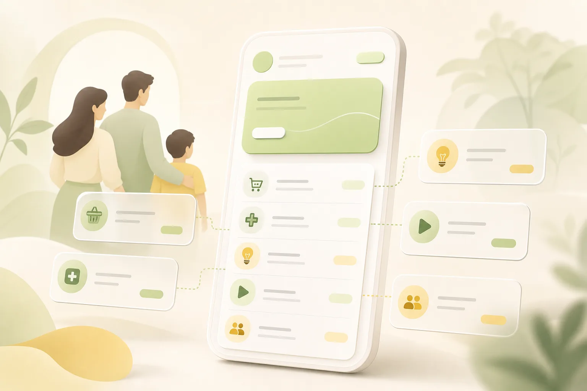

Family Reimbursement Tracker
Family Reimbursement Tracker for Parents, Bills, and Everyday Payback
Family reimbursements get messy when they continue over time. You pay for a parent’s utility bill, cover a subscription, buy groceries, book travel, or handle an online purchase — then the repayment happens later, partially, or not all at once.
YouOweMe keeps family money clear with a running balance, repayment history, recurring entries, reminders, and calm money messages when it is time to settle up.
- Track purchases made for parents or family members
- Keep one clear running balance per person
- Record partial repayments without losing history
- Handle subscriptions, utilities, and recurring charges
- Share clean summaries when it is time to reconcile
Works offline • No mandatory sign-up • Face ID / Touch ID lock

Family reimbursements are different from ordinary shared expenses
Family money often starts with goodwill. You cover something because it is easier. You assume everyone will remember. But after a few subscriptions, utility bills, pharmacy runs, groceries, travel bookings, and partial repayments, nobody is fully sure what the current balance is.
That uncertainty can create tension even when everyone has good intentions. YouOweMe gives the family a simple record of what happened, what was repaid, and what still needs to be settled.
If you only need to divide one family purchase or one trip cost, the Split Expense Calculator may be enough. For broader shared costs across friends, roommates, couples, or family, see the shared expense tracker.
The goal is not to make family money feel cold or formal. The goal is to keep it clear enough that nobody has to carry the balance in their head.
Built for real family reimbursement situations
Use YouOweMe when family money moves back and forth over time, especially when the amounts are too important to forget but too personal to make awkward.
Adult children helping parents
Track utilities, subscriptions, medicine, groceries, travel bookings, online purchases, and other costs you pay on behalf of a parent.
Parents and adult children
Keep loans, temporary help, repayments, and everyday family costs clear without relying on memory or old messages.
Siblings sharing family costs
Record parent-related expenses, household services, repairs, care costs, travel, or recurring bills that several siblings need to split. For wider shared-cost situations, the shared expense tracker covers friends, couples, roommates, and family too.
Couples and extended family
Handle mixed spending where one person pays now and another family member reimburses later.
The unofficial family accountant
If you are the person everyone asks to pay, book, renew, or organize, keep the running balance clear in one place.
Why family reimbursements become hard to track
Most family money problems do not start with bad intentions. They start when small payments, repeated bills, and partial repayments live in different places.
This is one reason simple loans and reimbursements do not stay simple over time.
Small payments stack up
Groceries, subscriptions, transport, medicine, household purchases, and online orders seem small until they accumulate.
Partial repayments blur the balance
Someone pays back part of the amount, but the remaining balance becomes unclear a few weeks later.
Recurring bills disappear into the background
Monthly utilities, subscriptions, services, and shared family charges keep repeating and are easy to forget.
Notes and chats get buried
A message thread can show what was said, but it rarely gives a clean answer to “what is the current balance?”
Nobody wants to bring it up
Because it is family, even a factual repayment reminder can feel emotionally risky.
YouOweMe gives you a calm record before the situation turns into guessing, silence, or resentment.
How YouOweMe keeps family reimbursements clear
Instead of rebuilding the story from receipts, notes, bank transfers, and memory, keep each family member’s money history in one simple place. If the situation is more about personal IOUs, overdue repayments, or follow-up messages, see the app to track money owed.
Log family purchases when they happen
Add a bill, grocery run, pharmacy purchase, travel booking, subscription, or online order as soon as you pay for it. The entry becomes part of the family member’s history.
Keep one visible running balance per person
See who owes whom without recalculating everything. Each purchase and repayment updates the balance, so you always know where things stand.
Record partial repayments without losing history
Family repayments are not always one clean transfer. Add partial repayments as they happen and keep the remaining balance clear.
Handle subscriptions, utilities, and recurring charges
Use recurring entries for repeated family costs like phone plans, streaming subscriptions, utilities, rent-like support, monthly services, or regular reimbursements.
Set reminders without carrying everything in your head
Use reminders for repayment dates, monthly reconciliation, or follow-ups so the responsibility does not live only in your memory.
Share a clean summary when it is time to reconcile
When the family is ready to settle up, share a clear summary or statement instead of explaining everything from scratch.
Write calmer money messages when wording matters
Money Conversations can help turn the balance and history into a calm, ready-to-send message when it feels awkward to ask. If timing is the hard part, read when to ask for money back or send a repayment update. If you know the balance but not what to say, read how to ask someone to pay you back without being rude.
What family members actually track
Family reimbursements are rarely one clean loan. They are usually a mix of everyday purchases, repeated charges, and repayments that happen later.
- Utility bills paid for parents
- Streaming subscriptions or phone plans
- Groceries and household supplies
- Pharmacy and medical-related purchases
- Travel bookings, tickets, or transport
- Household repairs or services
- Insurance, appointments, or admin costs
- Money lent to children, parents, or relatives
- Sibling reimbursements for shared family costs
- Partial repayments over several weeks
- Monthly reconciliation instead of constant small transfers
- Purchases made online for relatives who do not use digital payments
If money moves between family members more than once, it deserves a clear history.
Reconcile every few weeks without rebuilding the whole story
Many families do not want to settle every small purchase immediately. That is normal. YouOweMe lets the balance build clearly over time, then makes it easier to reconcile once a week, once a month, or whenever the family is ready.
- Keep the ongoing balance visible
- Add repayments when they happen
- Let recurring bills appear in the history
- Share a summary before settling
- Avoid debating old purchases from memory
Instead of asking “wait, what was included?”, everyone can start from the same clear record.
Why a family reimbursement tracker works better than a spreadsheet
A spreadsheet can work for a short, formal calculation. But family reimbursements often happen on the go, over weeks or months, with partial repayments and recurring charges.
When the system is a spreadsheet
- One person has to update it
- Small expenses are skipped
- Recurring costs require manual work
- The file can feel too formal for family
- The current balance may not be trusted
- It is harder to use quickly on mobile
When the system is YouOweMe
- Purchases and repayments live in one history
- The current balance stays visible
- Partial repayments are easy to record
- Recurring entries reduce manual work
- Reminders help with timing
- Summaries make reconciliation calmer
The goal is not to make family money feel corporate. The goal is to make it clear enough that nobody has to carry the balance in their head.
Used for real family money, not just one-time IOUs
YouOweMe is already used for the kind of family tracking that usually outgrows memory, notes, or chat history.
Parents, subscriptions, and utilities
“It has been incredibly helpful for managing money exchanged between me and my elderly parents. I handle their subscriptions, some utility accounts, and online purchases...”
Recurring charges and periodic reconciliation
“The recurring charge feature is especially useful for monthly bills... we can reconcile periodically and still keep every money exchange accurate.”
Multiple family members
“It is invaluable at keeping me on track with purchases made on behalf of multiple family members...”
Short excerpts from reviews already featured on the site.
Family money can be sensitive. A clear record helps keep the conversation factual, calm, and fair.
What is a family reimbursement tracker?
A family reimbursement tracker is a simple system for recording money paid on behalf of family members, repayments received later, recurring family costs, partial paybacks, and the current balance between people. It helps families avoid relying on memory, scattered messages, or spreadsheets when money moves back and forth over time.
Features that matter for family reimbursements
Family need
“I paid for something for my parent”
YouOweMe feature: Fast entry logging
Family need
“They paid me back part of it”
YouOweMe feature: Partial repayment history
Family need
“This bill repeats every month”
YouOweMe feature: Recurring entries
Family need
“I do not want to forget to settle up”
YouOweMe feature: Reminders
Family need
“I need to show what was included”
YouOweMe feature: Clean summaries / PDF statements
Family need
“I do not know how to phrase it”
YouOweMe feature: Money Conversations
Family need
“I manage different people separately”
YouOweMe feature: Running balance per person
Family need
“I want privacy”
YouOweMe feature: Works offline + Face ID / Touch ID lock
Keep family money clear without making it awkward
Track what you paid, what was repaid, what repeats, and what still needs to be settled — all in one calm history.
Frequently asked questions
What is a family reimbursement tracker?
A family reimbursement tracker records money paid on behalf of family members, repayments received later, recurring family costs, partial paybacks, and the current balance between people. It helps families avoid relying on memory, scattered messages, or spreadsheets.
Can I use YouOweMe to track money I pay for my parents?
Yes. You can track utilities, subscriptions, groceries, pharmacy purchases, travel bookings, online purchases, and other costs you pay on behalf of a parent or family member.
Can I track recurring family bills?
Yes. You can use recurring entries for subscriptions, utilities, phone plans, monthly services, rent-like support, or other repeated family costs.
Can I track partial repayments?
Yes. Partial repayments can be recorded in the history so the remaining balance stays clear without recalculating everything manually.
Does every family member need to install the app?
No. You can use YouOweMe to keep your own clear record of family reimbursements. When it is time to settle up, you can share a clean summary or statement if you want the other person to see what was included.
Is this better than using a spreadsheet?
For ongoing family reimbursements, usually yes. A spreadsheet can work for a one-time calculation, but YouOweMe is easier for quick mobile entries, partial repayments, recurring charges, reminders, and keeping a visible running balance.
Can I use it with siblings for parent-related costs?
Yes. You can track shared family costs such as bills, repairs, care-related purchases, travel, services, and other expenses that siblings plan to reimburse or split.
Can YouOweMe help me send a repayment reminder?
Yes. Money Conversations can help you turn the balance and history into a calmer message when it is time to follow up.
Is YouOweMe a budgeting app?
No. YouOweMe is focused on money between people: who paid, who owes whom, repayments, reminders, recurring entries, and the history behind the balance.
Related guides and tools
Track money between family members with less mental load
YouOweMe helps families keep money clear without making the relationship feel transactional. Keep the running balance, repayments, recurring bills, summaries, and follow-up context in one place.
Updated